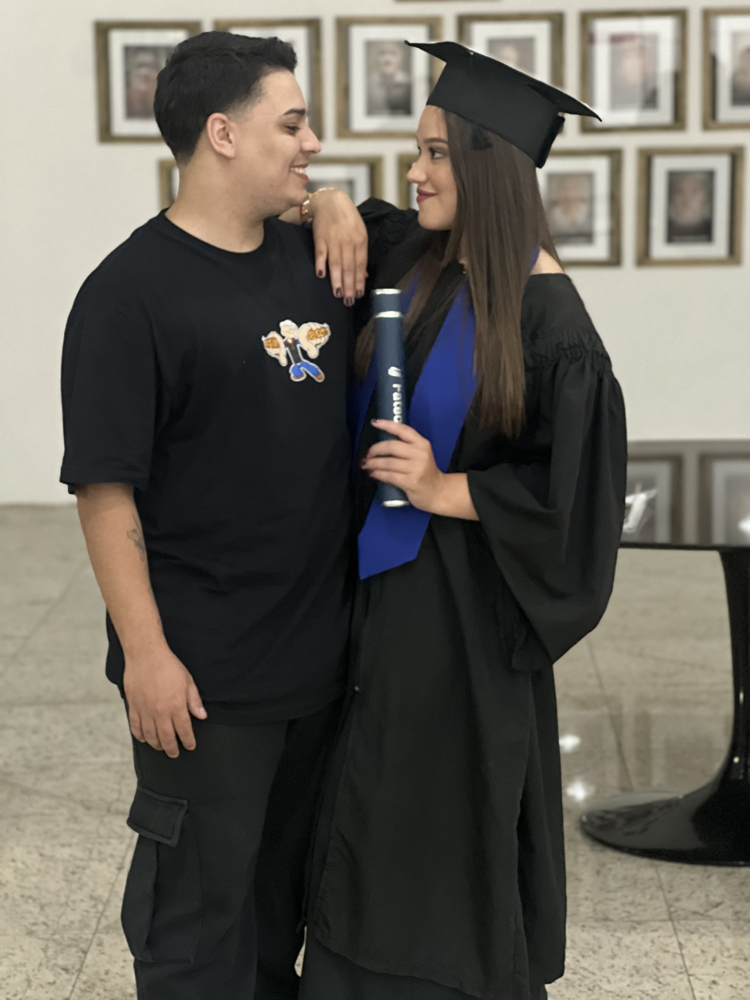
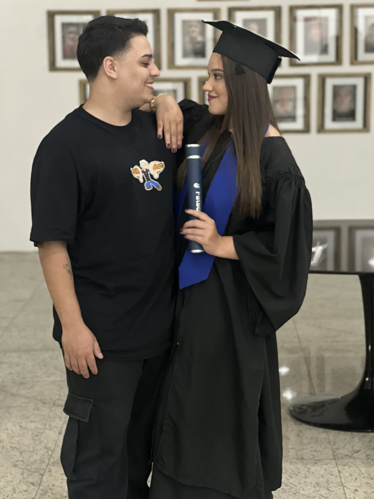
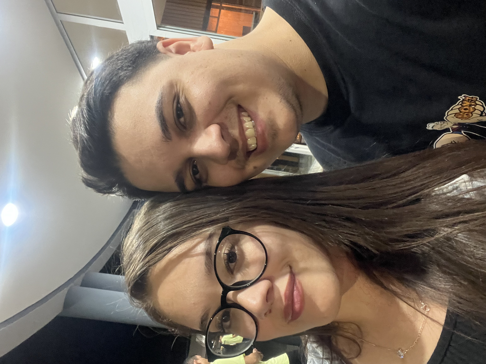
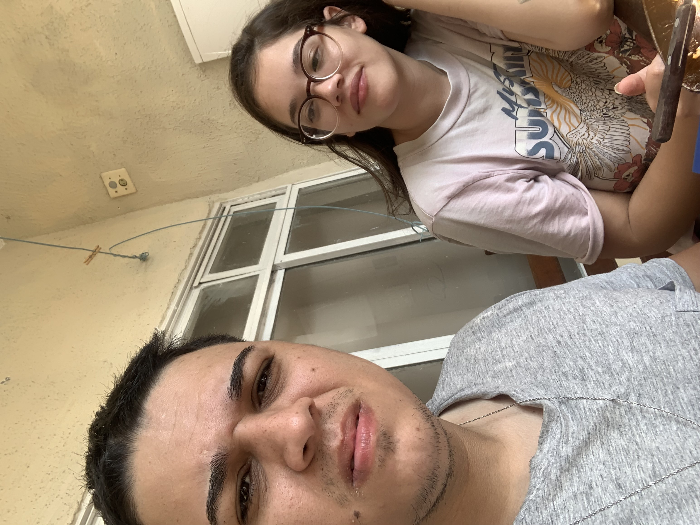
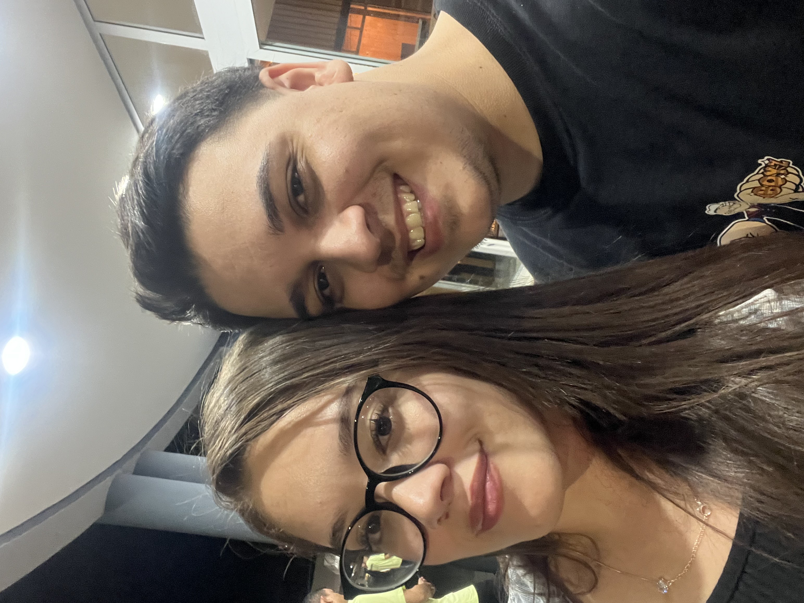
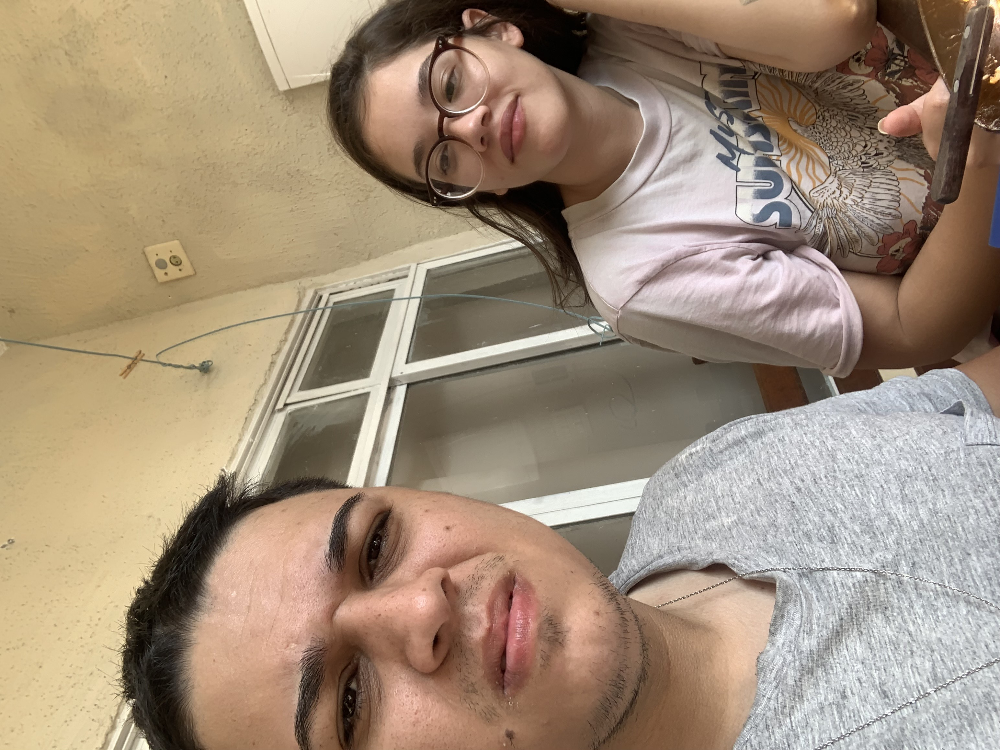

 



Hoje é o nosso 5º Dia dos Namorados juntos. E é impossível não olhar pra trás e lembrar de tudo o que a gente viveu até aqui. Foram tantas coisas que poderiam ter nos afastado… obstáculos, diferenças, momentos difíceis mas mesmo assim, a gente escolheu continuar. Juntos. Sempre lado a lado. Não foi fácil. Teve dia que doeu, teve dia que cansou. Mas o amor sempre falou mais alto. Sempre teve esse apelo forte entre nós, essa conexão que nem o tempo nem as dificuldades conseguiram quebrar. E isso é o que me faz ter ainda mais certeza de que é contigo que eu quero ficar. Re, estar ao teu lado é uma das maiores alegrias da minha vida. Te amar é uma escolha que eu faço todos os dias, com o coração cheio. Você é a pessoa que me entende mesmo quando eu não falo nada, que me desafia, que me acalma e que me faz querer ser alguém melhor. Que venham muitos outros Dias dos Namorados, muitos dias comuns também porque os dias simples contigo são os mais especiais. Eu sou muito feliz ao teu lado, e quero viver o resto da minha vida com você. Um passo de cada vez, mas sempre juntos. Te amo Te amo Te amo mil milhões, até o fim juntos Saiba que voce é a mulher da minha vida.
Estamos juntos há:
Nosso namoro começou em: 2020-01-21